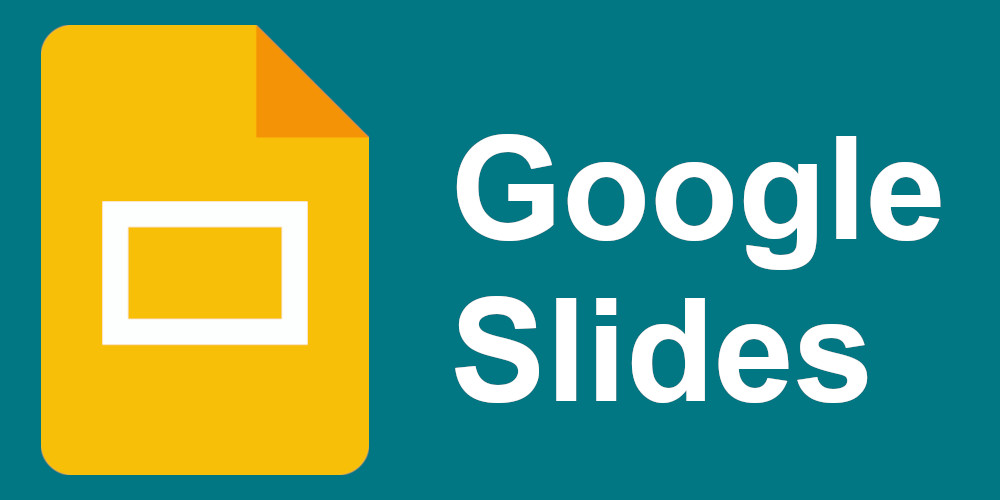
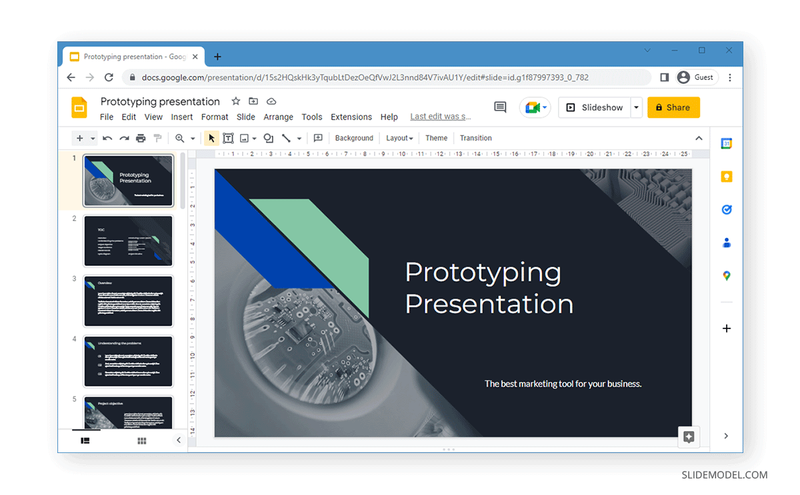

Google Slides
Características principalesAcceso
universal: Al operar en la nube, puedes acceder a tus presentaciones desde cualquier computadora, tableta o teléfono inteligente, sin necesidad de instalar un software especializado.

Trabajo colaborativo: Varios usuarios pueden editar, añadir comentarios y chatear dentro del mismo archivo al mismo tiempo, viendo los cambios en tiempo real.
Guardado automático: Cada modificación se registra automáticamente en el historial de revisiones, por lo que nunca perderás tu trabajo.
¿Para qué sirve?
Es ideal para proyectos educativos, presentaciones de ventas o módulos de capacitación. Puedes empezar desde cero o utilizar plantillas predeterminadas para darle un diseño profesional a tu información. Además, cuenta con funciones de inteligencia artificial para generar visualizaciones únicas.
Google Slides (Presentaciones) ofrece un conjunto de herramientas colaborativas integradas. Para acceder y gestionar tus proyectos, visita Presentaciones de Google. Si necesitas integrar documentos y encuestas, puedes usar Google Forms.
Las herramientas se dividen en:
1. Colaboración y Trabajo en EquipoEdición simultánea: Permite que varios usuarios trabajen en la misma diapositiva en tiempo real. Comentarios y chat: Puedes dejar notas, asignar tareas a colaboradores específicos (@nombre) y chatear dentro del archivo. Historial de versiones: Rastrea quién hizo cada cambio y revierte la presentación a un estado anterior si es necesario.
2. Diseño y ContenidoHerramientas de formato: Inserción de textos, formas, líneas, tablas, gráficos y videos. Vínculos: Herramientas para insertar hipervínculos que dirigen a secciones internas o páginas web externas.
3. Herramientas de Google Slides para Diseñar Lecciones.Explorador: IA integrada que sugiere diseños y estilos para tus diapositivas según el contenido.
4. Modos de PresentaciónNotas del orador: Espacio para escribir notas y guiones visibles únicamente para ti. Puedes introducirlas mediante el Dictado por voz Curso Google Slides.
Herramientas de Presentación y Notas
- Sesión de preguntas y respuestas: Habilita un enlace en vivo para que el público envíe preguntas desde sus dispositivos, las cuales puedes mostrar en pantalla Herramientas de presentación - Google Slides.
- Puntero láser: Herramienta virtual para resaltar elementos durante la exposición en tiempo real.
- Automatización y
Complementos Google Apps Script: Permite crear códigos simples para automatizar tareas repetitivas o conectar la presentación con otras aplicaciones Google Slides - Google for Developers. - Complementos: Existen extensiones útiles para insertar diagramas, plantillas o herramientas interactivas, como puedes explorar
Ventajas
- Accesibilidad y almacenamiento en la nube
- Colaboración en tiempo real
- Integración con otras aplicaciones de Google
- Facilidad de uso y plantillas
- Gratuito y multiplataforma

Desventajas
- Limitaciones de diseño
- Dependencia de la conexión a Internet
- Privacidad y seguridad
- Funciones avanzadas limitadas